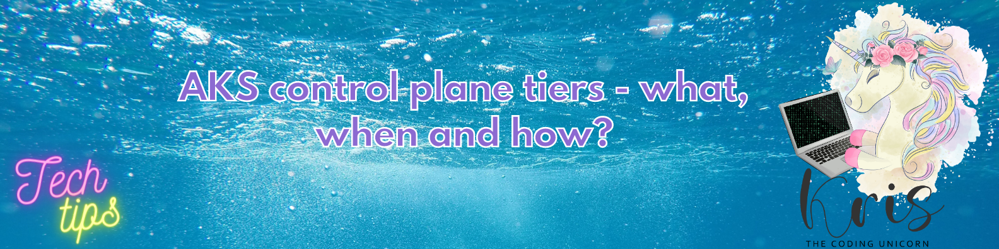
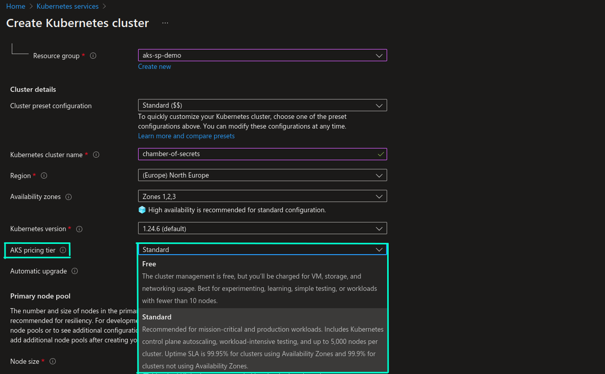
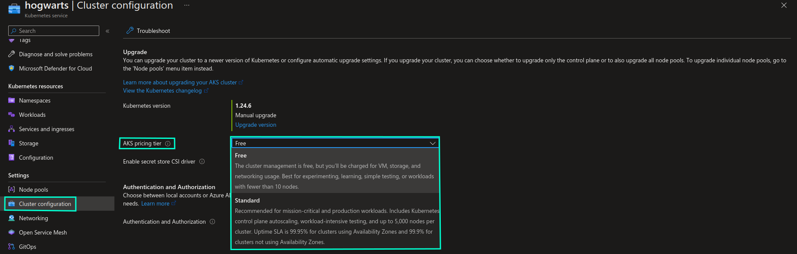
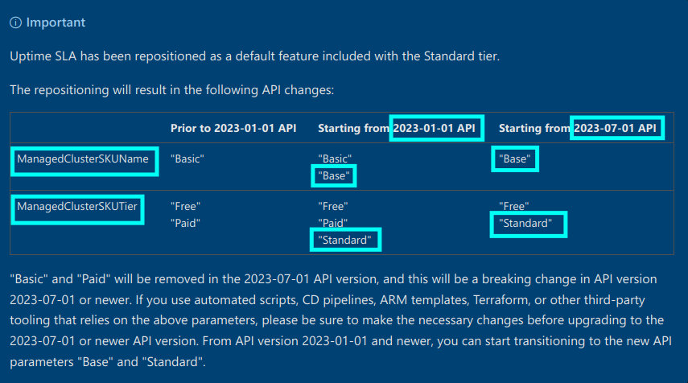

AKS Control Plane Tiers - What, When and How?

Recently a new property became available in Azure Portal when creating a new Azure Kubernetes Service instance:

Have you seen it and do you know what it actually is? Wait, does AKS have pricing tiers?! I thought that the only price we need to pay was based on the chosen VM SKU for AKS Nodes….right?🤨
Well, the answer is yes and no.😺 By default AKS is a free service and you only pay for the virtual machines you choose for your Nodes, plus associated storage and networking resources. There are nevertheless some additional billed capabilities that can be enabled, like Uptime SLA, which is now more streamlined with visibility in Azure Portal.
What you can see on the screenshot above is related to enablement of an AKS capability called Uptime SLA, and it is mainly related to making control plane of the AKS cluster highly available. General best practice for Kubernetes control plane availability is to have multiple replicas of a control plane that are running on at least 3 nodes spread across failure zones, either with stacked etcd (a replica of etcd deployed per node) or external etcd (etcd replicas are deployed separately, on dedicated hosts, which are also known as external etcd cluster) topology.
The thing is that, when it comes to Managed Kubernetes Service like AKS, cloud provider is responsible for managing control plane, and us as consumers may not get enough information in order to understand what has been done in terms of control plane availability. In case of AKS Microsoft doesn’t share implementation details for the control plane architecture, where one of the reasons being that it’s subject to frequent changes. What we know though is that without Uptime SLA there are fewer replicas and resources available for the control plane to scale, therefore creating AKS clusters without Uptime SLA is not recommended for production workloads.
Update February 2023: New documentation from Microsoft was released that provides some more details regarding AKS pricing tiers. For instance, if you have more than 10 nodes in your AKS cluster, it’s recommended to use Standard tier, even though Free tier can support up to 1000 nodes. You can read more about it here: Free and Standard pricing tiers for Azure Kubernetes Service (AKS) cluster management
With Uptime SLA, 99.95% availability is guaranteed for Kubernetes API server endpoint for AKS clusters with availability zones and 99.9% for AKS clusters without availability zones. For production workloads you should also use availability zones in order to ensure that your clusters will keep running in case of a region failure for example.
You can enable/disable Uptime SLA both for new and existing AKS clusters without downtime. We have seen above how you can enable it for a new AKS cluster in the Azure Portal. You can enable it for existing AKS cluster through Azure Portal, from the “Cluster configuration” section:

A few programmatical options you can do the same with:
Update February 2023: Breaking changes are being introduced to AKS pricing tiers API which means that, with Azure CLI version 2.46.0 or newer and API version 2023-01-01 or newer you will need to update AKS SKU tier and name properties to following values (also mentioned in examples below): 
Azure CLI
You can use --uptime-sla (or --tier standard for Azure CLI v2.46.0 or newer) argument to enable Uptime SLA on new and existing AKS clusters, and --no-uptime-sla (or --tier free for Azure CLI v2.46.0 or newer) to disable it.
# Azure CLI prior to v2.46.0
az aks create --name chamber-of-secrets --resource-group hogwarts-rg --uptime-sla
az aks update --resource-group hogwarts-rg --name chamber-of-secrets --uptime-sla
# Azure CLI v2.46.0 or newer
az aks create --name chamber-of-secrets --resource-group hogwarts-rg --tier standard
az aks update --resource-group hogwarts-rg --name chamber-of-secrets --tier standard
Terraform
You can use sku_tier attribute of azurerm provider to enable Uptime SLA by setting it to Paid (Standard for 2023-01-01 API version or newer). Default value is Free.
resource "azurerm_kubernetes_cluster" "aks" {
name = "chamber-of-secrets"
location = azurerm_resource_group.aks.location
resource_group_name = "hogwarts-rg"
sku_tier = "Paid" # "Standard" for 2023-01-01 API version or newer
}
# REST OF THE CODE IS OMITTED
Bicep
sku.tier setting can be used to enable Uptime SLA.
resource aks 'Microsoft.ContainerService/managedClusters@2022-05-02-preview' = {
name: 'chamber-of-secrets'
location: 'norwayeast'
sku: {
name: 'Basic' // 'Base' for 2023-01-01 API version or newer
tier: 'Paid' // 'Standard' for 2023-01-01 API version or newer
}
// REST OF THE CODE IS OMITTED
}
You can read more about AKS Uptime SLA here: Azure Kubernetes Service (AKS) Uptime SLA
That's it for now - Thanks for reading and till next tech tip 😼